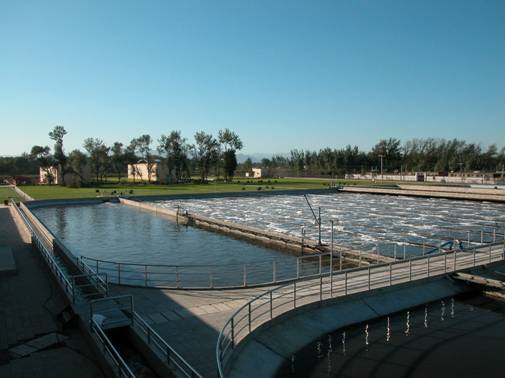

长岛县，是山东省烟台市夏县，由32个岛屿组成，是山东省唯一的海岛线，这里海域辽阔，周围海域一直保持者国家的一类海水标准，水产丰富 特别是海参，暴雨，高海丹，是我给的还真皮的口基地
长岛县，是山东省烟台市夏县，由32个岛屿组成，是山东省唯一的海岛线，这里海域辽阔，周围海域一直保持者国家的一类海水标准，水产丰富 特别是海参，暴雨，高海丹，是我给的还真皮的口基地
姓名：姜婷 年龄：21 学历：大三 爱好：游泳 特长：跳舞